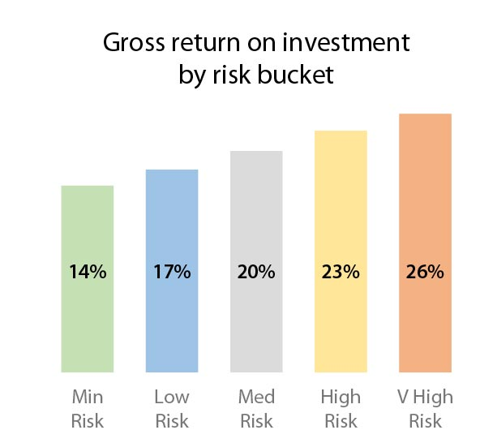
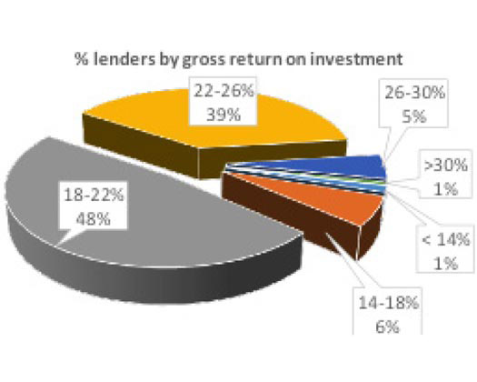
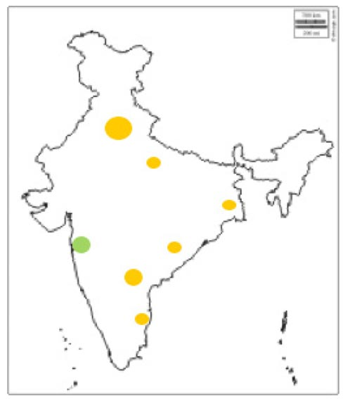
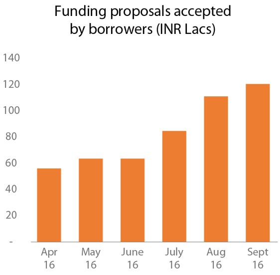
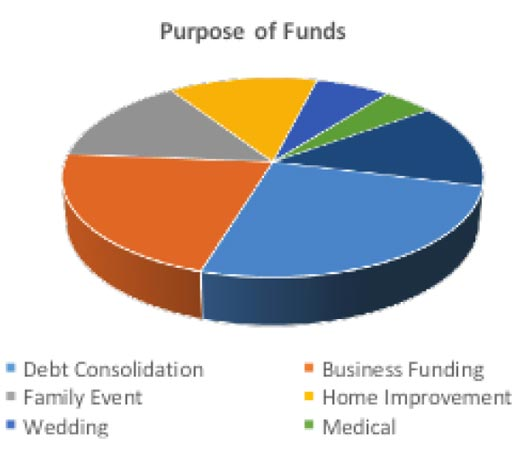
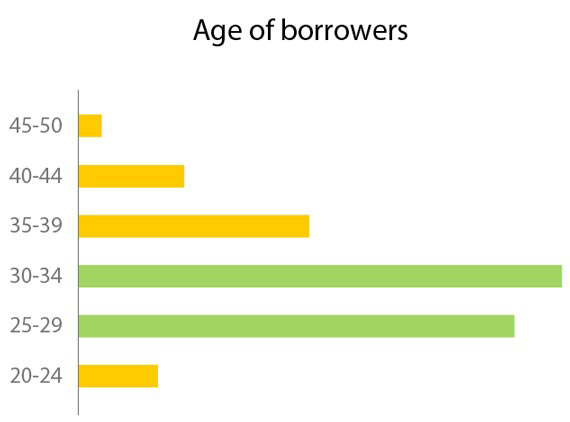
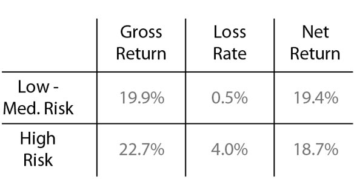
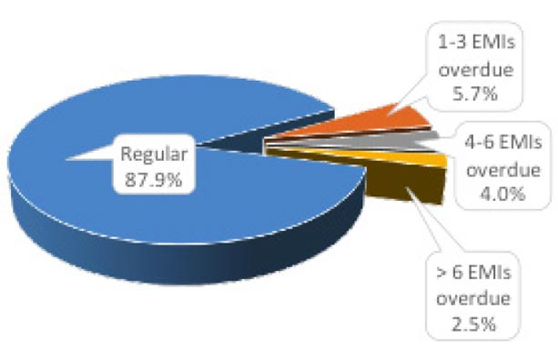
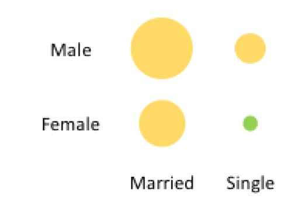

Performance Overview
P2P lending is a new and unique asset class which promises to give higher returns at predictable risk.
Faircent as a P2P lending platform does in-depth screening of borrowers using over 200 data points and rates them from minimal risk to very high risk basis their credit profile.
Investment Profile
Investors have an option of earning interest between 14% to 26% p.a depending on their risk appetite.
90% of lenders are earning a gross return of 18 to 26%p.a.
Portfolio Analysis
Borrowers are from diverse geographical backgrounds. Its too early to judge but there are some emerging patterns.

Borrower fund
The demand for funds has been increasing at a fast pace over the last 6 months. Funding through Faircent.com crossed the INR 1 crore per month mark in August 2016.
Over 25% funding requests are for consolidation of loans taken from other sources including overdues on credit cards. The borrower would be able to get 10% to 14% p.a lower interest rate on Faircent as compared to these sources.
Demand for loans to finance business requirements followed by funds needed for family events are other popular loan purposes.
Majority of borrowers on the platform are young, in the below 30-year age group and have recently started working. They may not have a detailed credit history; however, current performance reveals that they are highly responsible in their repayments. As a result, risk-adjusted net returns from investments in this bracket are a healthy 20% to 24% p.a.
Risk-Adjusted Net Returns
As with any market-based investment, the portfolio returns have an inherent risk element. The net returns after taking into account the losses are in a healthy range of 18% to 20% p.a.
Loan Performance
The performance of loans taken by borrowers through the platform is measured based on the regularity of repayments to lenders.
A diligent collection process supported by automated repayment reminders to borrowers who are late in their repayments is followed, to ensure a healthy loan performance.
Over 88% of borrowers have been making repayments regularly; only 2.5% of borrowers have more than 6 repayments due.


Single working women are the force fuelling the Indian economy. Hence, it’s no wonder that loans taken by single women are also a lucrative asset to have in your investment portfolio.
While no clear trend emerges with other gender-marital status combinations, an investment across this parameter delivers a decent net return of 17% to 19% p.a.
- All colour coding in the above metrics:
- Net return 14 to 16%
- Net return 17 to 19%
- Net return 20 to 24%
Trends
Based on the behaviour of borrowers & lenders on the Faircent platform so far, some interesting trends are emerging as follows:
- Married borrowers are 1.5 times more likely to get funded by lenders than single borrowers.
- Contrary to belief, first time borrowers with no CIBIL record do make timely repayments and deliver healthy net returns.
- Self-employed professionals (doctors, architects, etc.) are twice more likely to get funded than self-employed businessmen. They tend to default less and hence deliver higher net returns.
- Borrowers seeking funds for family events are more likely to receive funding than borrowers seeking funds for purchasing a 2-wheeler / appliance. However, when it comes to repayments, borrowers taking loan for purchasing 2 wheelers / appliances are more timely.
What’s new:
- Faircent is the first P2P lending website to introduce asset-based investment opportunity through a tie-up with Baxi – India’s first mobile bike-taxi operators.
- Faircent will continue to provide similar innovative alternative investment opportunities to its lenders in the near future.
- More than 100 new borrowers with diverse backgrounds and geographies are listed for funding. Lenders have an opportunity to potentially earn returns upwards of 18% p.a.
- Customized portfolio analysis for each lender providing detailed report on their investment will be provided by Faircent.
In RBI’s latest monetary policy, interest rates were cut by 25 bps. However, as observed in the past, banks are fast to reduce deposit rates for investors but slow to reduce lending rates for borrowers. Faircent provides its lenders with an opportunity to earn like a bank.
Disclaimers:
All information stated above is updated as of Sep’16 unless otherwise stated. The trends provided above are purely for information purposes and being dynamic are true as of the date of publishing but can change immediately thereafter. There are some predictions (which are purely estimates) made in some of the sections above and Faircent is not accountable for its authenticity or veracity.